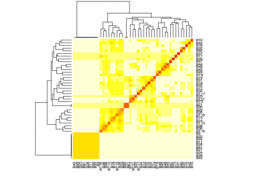

Conjunto de dados referentes a bens de túmulos de um cemitério em Bannadi, nordeste da Tailândia. São registros de presença ou ausência de 38 diferentes artigos em cada um dos 46 túmulos, com informação adicional sobre se os restos mortais eram de um adulto masculino, feminino ou criança. Os sepultamentos estão na ordem de riqueza de diferentes bens (totais variando de 0 a 11), e os bens estão na ordem de frequência de ocorrência (totais variando de 1 a 18).
Um data.frame com 45 linhas e 38 colunas.
septipoobj1obj2obj3obj4obj5obj6obj7obj8obj9obj10obj11obj12obj13obj14obj15obj16obj17obj18obj19obj20obj21obj22obj23obj24obj25obj26obj27obj28obj29obj30obj31obj32obj33obj34obj35obj36obj37obj38MANLY (2005), (pág. 153 e 154)
data(ManlyTb9.8)#> Warning: data set ‘ManlyTb9.8’ not foundstr(ManlyTb9.8)#> 'data.frame': 45 obs. of 40 variables: #> $ sep : Factor w/ 44 levels "B10","B11","B12",..: 21 37 20 2 16 29 15 12 27 31 ... #> $ tipo : int 3 2 2 1 1 2 2 2 1 2 ... #> $ obj1 : int 0 0 0 0 0 0 0 0 0 0 ... #> $ obj2 : int 0 0 0 0 0 0 0 0 0 0 ... #> $ obj3 : int 0 0 0 0 0 0 0 0 0 0 ... #> $ obj4 : int 0 0 0 0 0 0 0 0 0 0 ... #> $ obj5 : int 0 0 0 0 0 0 0 0 0 0 ... #> $ obj6 : int 0 0 0 0 0 0 0 0 0 0 ... #> $ obj7 : int 0 0 0 0 0 0 0 0 0 0 ... #> $ obj8 : int 0 0 0 0 0 0 0 0 0 0 ... #> $ obj9 : int 0 0 0 0 0 0 0 0 0 0 ... #> $ obj10: int 0 0 0 0 0 0 0 0 0 0 ... #> $ obj11: int 0 0 0 0 0 0 0 0 0 0 ... #> $ obj12: int 0 0 0 0 0 0 0 0 0 0 ... #> $ obj13: int 0 0 0 0 0 0 0 0 0 0 ... #> $ obj14: int 0 0 0 0 0 0 0 0 0 0 ... #> $ obj15: int 0 0 0 0 0 0 0 0 0 0 ... #> $ obj16: int 0 0 0 0 0 0 0 0 0 0 ... #> $ obj17: int 0 0 0 0 0 0 0 0 0 0 ... #> $ obj18: int 0 0 0 0 0 0 0 0 0 0 ... #> $ obj19: int 0 0 0 0 0 0 0 0 0 0 ... #> $ obj20: int 0 0 0 0 0 0 0 0 0 0 ... #> $ obj21: int 0 0 0 0 0 0 0 0 0 0 ... #> $ obj22: int 0 0 0 0 0 0 0 0 0 0 ... #> $ obj23: int 0 0 0 0 0 0 0 0 0 0 ... #> $ obj24: int 0 0 0 0 0 0 0 0 0 0 ... #> $ obj25: int 0 0 0 0 0 0 0 0 0 0 ... #> $ obj26: int 0 0 0 0 0 0 0 0 0 0 ... #> $ obj27: int 0 0 0 0 0 0 0 0 0 0 ... #> $ obj28: int 0 0 0 0 0 0 0 0 0 0 ... #> $ obj29: int 0 0 0 0 0 0 0 0 0 0 ... #> $ obj30: int 0 0 0 0 0 0 0 0 0 0 ... #> $ obj31: int 0 0 0 0 0 0 0 0 0 0 ... #> $ obj32: int 0 0 0 0 0 0 0 0 0 0 ... #> $ obj33: int 0 0 0 0 0 0 0 0 0 0 ... #> $ obj34: int 0 0 0 0 0 0 0 0 0 0 ... #> $ obj35: int 0 0 0 0 0 0 0 0 0 0 ... #> $ obj36: int 0 0 0 0 0 0 0 0 0 0 ... #> $ obj37: int 0 0 0 0 0 0 0 0 0 0 ... #> $ obj38: int 0 0 0 0 0 0 0 0 0 0 ...matdist <- as.matrix(dist(ManlyTb9.8[, -c(1, 2)], method = "binary")) # Mapa de calor para a matriz de dissimilaridades. heatmap(matdist, margins = c(6, 6), labRow = ManlyTb9.8$sep, labCol = ManlyTb9.8$sep)